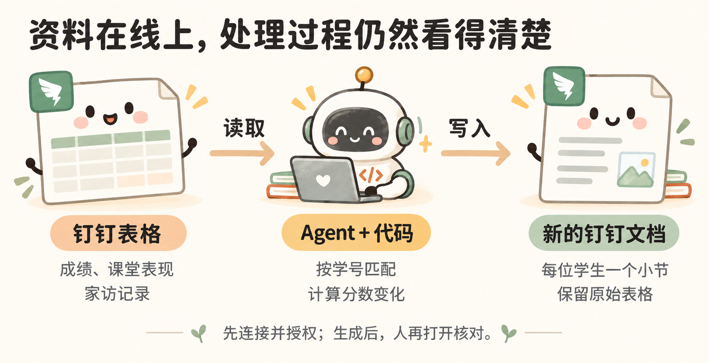

让 Agent 使用钉钉里的资料
资料放在钉钉表格或文档里时，可以连接对应的 MCP 服务，让 Agent 在授权范围内直接使用这些资料。先把它理解为接通钉钉功能的一种方式就够了。
钉钉 MCP 案例：读取学生资料，生成家长会文档

沿用前面的三个虚构学生。这次把成绩、课堂表现和家访记录放在钉钉 AI 表格里，让 Agent 读取这些资料，按学生整理后，写成一篇钉钉文档。下面是使用示例。
先接上这次需要的两项服务。
打开 钉钉 MCP 入口，找到“钉钉 AI 表格”和“钉钉文档”：前者用来读取表格，后者用来创建和写入文档。登录后，按照页面上的“使用 MCP”说明连接 Agent 并完成授权。
接好后，先把一张测试表的链接交给 Agent：
先看看你能不能读取这张钉钉 AI 表格。告诉我里面有几张表、每张表有哪些栏目，再读几条记录给我看看，先不要修改。
看到它读出的内容与表里一致，再继续下面的任务。
把资料位置和要做的事一起告诉它。
这个线上示例可以沿用演示文件包的资料：在钉钉 AI 表格中新建三张测试数据表，分别导入包内的 grades.csv、class_notes.csv、visits.csv，保留原来的列名。再准备一个存放结果的钉钉文件夹。把下面两处方括号换成自己的链接，就可以发给 Agent：
我要准备家长会材料。请使用已经连接的钉钉 MCP。
学生资料在这里：[钉钉 AI 表格链接]
生成的文档放在这里：[钉钉文件夹链接]
里面有成绩、课堂表现和家访记录三张表。
先看看实际的表名和列名，再按学号把同一个人的资料放在一起。
用代码算出每个学生各科的期末成绩比期中提高或下降了多少分。
课堂表现和家访记录保留原文；缺少记录就写“暂无记录”。
在指定文件夹新建一篇“家长会学生情况汇总”。
每位学生一个小节，放姓名、学号、成绩对比、课堂表现和家访记录。
原来的三张表保持不变。
写好后，重新读取新文档，检查有没有漏人、分数算错或记录放错。
把文档链接发给我，再告诉我检查的结果。
打开返回的文档，核对几处。
三个学生应各有一个小节。使用完整练习的原始样例时，张三的数学提高 20 分；如果已按练习改成 95 分，就应提高 25 分。李四的数学下降 6 分，王五的家访记录显示“暂无记录”。再看看每个人的课堂表现和家访内容有没有放错。
下次有了新资料，可以继续说：
按上次的整理方式，用这次的学生资料再生成一份家长会文档。新文档名称带上本次日期，保留上次的文档。
MCP 像连接 Agent 和其他软件的“插口”，能读什么、能改什么，取决于接入的功能和账号授权。MCP 官方说明
这次变化的是资料的位置和结果的去处：从“读电脑里的表格、生成网页”，变成了“读钉钉表格、生成钉钉文档”。按学号匹配、计算分数、核对结果，仍然沿用前面的做法。